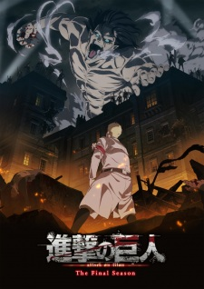

Introduction – Saison 4 :

De l’autre côté de la mer, Eren pensait trouver la liberté. Mais par-delà les flots se dévoile en réalité le champ de bataille qui oppose les armées de Mahr et de Eldia.
Les guerriers Eldiens ralliés à leurs oppresseurs doivent y faire leurs preuves pour se montrer dignes d’hériter des pouvoirs des titans primordiaux…
PRESENTATION :
SCÉNARIO SAISON 4
L’Attaque des Titans saison 4 est dans une position particulière, compte tenu du fait que le manga est toujours en cours de parution. Un communiqué avait confirmé que la série de Hajime Isayama était en train de produire son dernier tome, mais on ignore encore combien de temps cela va prendre. Si l’on ajoute à cela tous les chapitres que L’Attaque des Titans (anime) n’a pas encore adaptés, on comprend rapidement le défi que constitue le fait de boucler tous les fils de l’intrigue en une seule saison.
POUR VOIR LA SUITE APPUIE ICI ;)
GALERIE MÉDIA :
Retrouvez les photos du sites !!!
POUR VOIR LA SUITE APPUIE ICI ;)
HISTOIRE :
BIOGRAPHIE RAPIDE DE HAJIME ISAYAMA
Hajime Isayama est un mangaka japonais originaire de la préfecture d'Ōita. Il a commencé à dessiner des mangas lorsqu'il était au lycée Hita Rinko Senior High School. Après avoir obtenu son diplôme, il a continué ses études dans une école professionnelle à Fukuoka.
POUR VOIR LA SUITE APPUIE ICI ;)
EREN JÄGER
Eren Jäger (japonais : エレン・イェーガー) est un membre du Bataillon d'exploration et le protagoniste principal de la série. Il a vécu dans le District de Shiganshina avec ses parents et Mikasa Ackerman jusqu'à la chute du Mur Maria. Au cours de l'incident, Eren assiste, impuissant, à la mort de sa mère par la main d'un Titan. Cet événement suscite chez Eren une haine intense envers les Titans, ce dernier voulant les éradiquer jusqu'au dernier.
POUR VOIR LA SUITE APPUIE ICI ;)